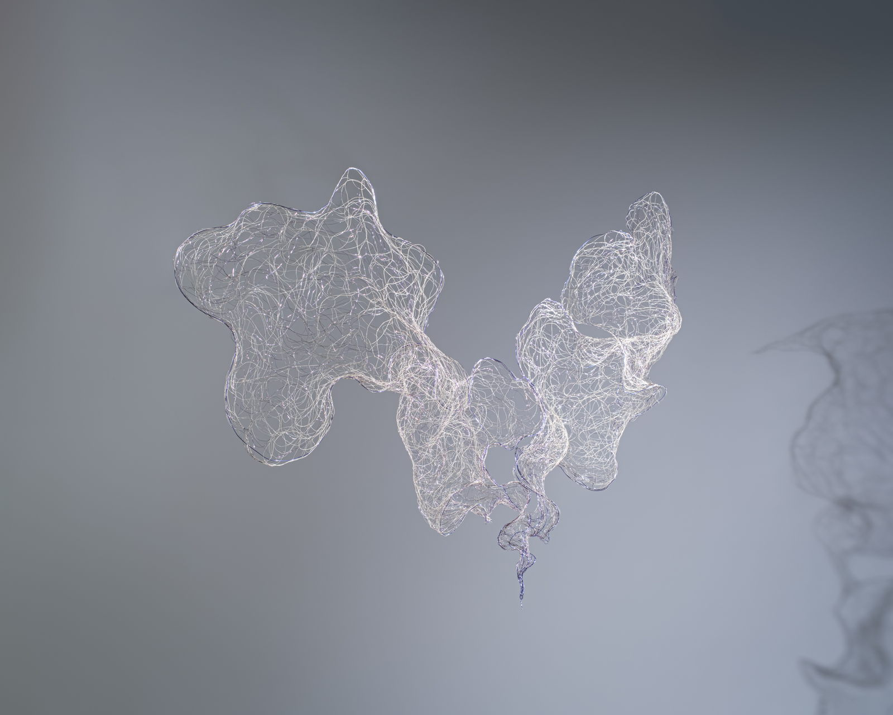
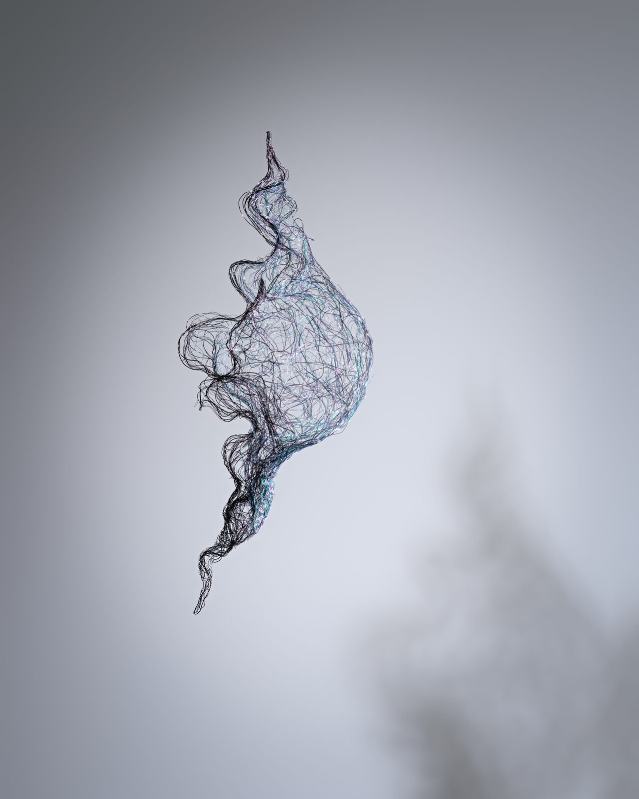
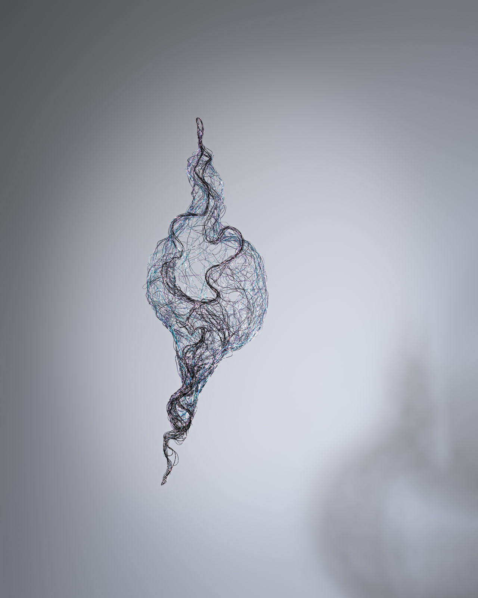
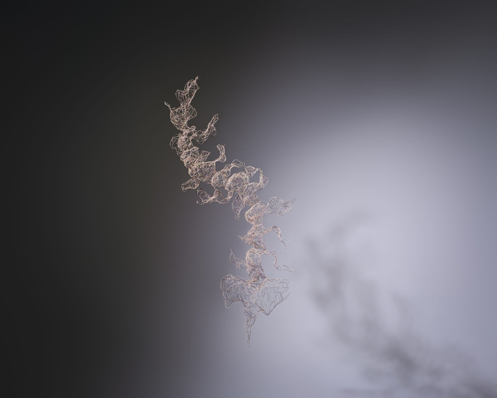

Darkness softens everything it touches, while silence sharpens the subtlest details and thoughts.
Light fades into a pale brilliance, softly illuminating the flow of time.
In the shadows, all things merge and silently transform, and the rhythms of life are hidden, inaudible.
The boundaries between dream and reality, presence and absence, blur and nearly diffuse. In the depths of darkness, when time feels frozen, it seems to cradle eternity—yet these universes slip away like phantoms, vanishing as quickly as they appear.